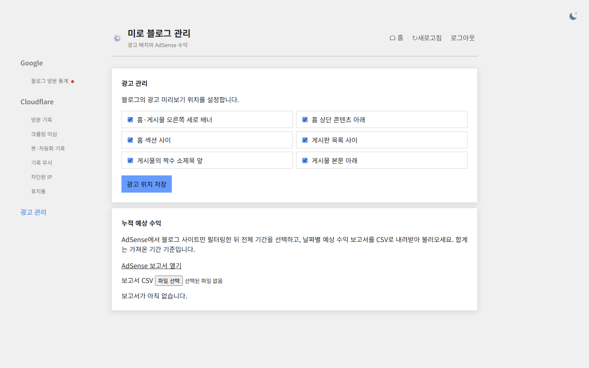

Tracefolio REPORTS & ISSUES
Tracefolio REPORTS & ISSUES문문동준 개발 블로그수정사항
블로그 관리자 왼쪽 메뉴에 광고 관리 배치
검증 대기광고 관리를 왼쪽 탭으로 옮기고 관리자 사이트맵 안내를 제거했습니다.
작업 결과
왼쪽 광고 관리 탭에서 광고 배치와 AdSense CSV를 사용할 수 있습니다. 예전 도구 주소는 광고 관리 탭으로 연결됩니다.
변경 내용
적용 내용
관리자 사이트맵 탭과 본문을 제거했습니다. 공개 sitemap.xml은 유지했습니다.
대화 기록
- 사용자: 왼쪽 패널에 광고 관리 탭을 만들고 사이트맵을 삭제하도록 요청했습니다.
- Codex: 광고 관리 탭 통합 및 운영 배포 결과를 확인했습니다.
교훈 검토: 지침 변경 없음.
검증
Worker 버전 1893dc78-1929-465c-baad-2d4d99586ddd. 운영 HTML에서 광고 탭과 폼·CSV, 사이트맵 UI 제거를 확인했습니다. 예전 경로는 303, 비로그인 광고 API는 401입니다. 로컬 Worker의 실제 브라우저에서 광고 탭이 열리고 저장된 체크 상태를 불러오는 것을 확인했습니다.

남은 사항
운영 로그인 세션을 사용할 수 없어 변경 전과 변경 후의 운영 관리자 캡처를 확보하지 못했습니다. 운영에서 광고 저장값은 변경하지 않았습니다. 소스는 로컬 변경 상태입니다.
작업 시간
- 제안 시간: 1~2분
- 실제로 완료된 시간: 16:33:46 KST 시작, 16:35:12 KST 배포 응답 확인, 16:35:48 KST 브라우저 캡처. 약 2분 2초.
- XERJ: 미사용 — 코드 검색 근거가 제공되지 않았습니다.